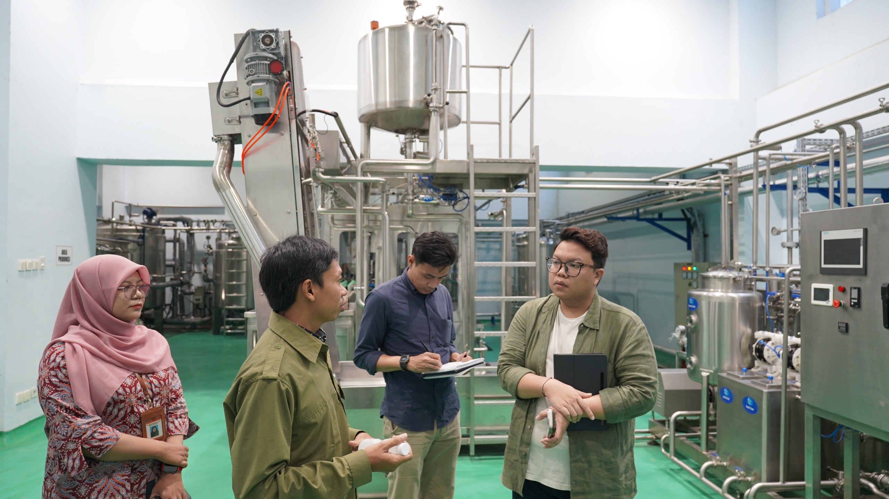

TEACHING FACTORY · POLIJE
Inovasi Pengolahan Susu untuk Masa Depan
Menghubungkan pendidikan vokasi, produksi, dan pengembangan produk susu dalam satu ekosistem pembelajaran nyata.
Belajar. Berinovasi. Berproduksi.

TENTANG TEFA UHT
Ruang belajar dengan pengalaman industri nyata.
TEFA UHT merupakan wadah pembelajaran berbasis produksi di Politeknik Negeri Jember. Mahasiswa mengenal proses pengolahan susu, praktik mutu, dan pengembangan produk melalui kegiatan yang terarah.
Profil TEFA →Kreasi dari pengolahan susu
Kenali ragam produk dan potensi pengembangannya di TEFA UHT.


Dari ide menjadi kolaborasi
Diskusikan kebutuhan pembelajaran, pengembangan produk, atau kerja sama bersama TEFA UHT.